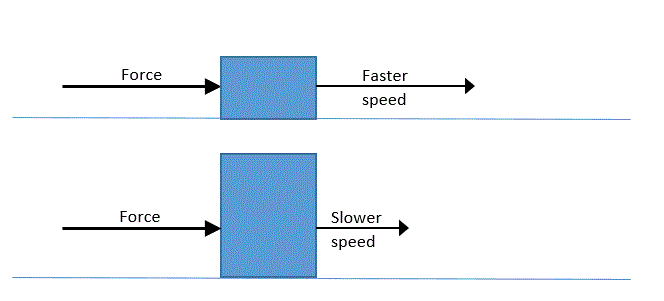

What is Mass? All physical objects (even atoms, protons, neutrons, and electrons) have some mass. Mass is the amount of "stuff" something is made of. Atoms are the "building blocks" of mass. The masses for the different kinds of atoms—or different elements—are given in the Periodic table. The mass of each element just depends on how many protons, neutrons, and electrons it has.
The mass of an object is directly proportional to the number of atoms that make up the object: the more atoms the object is made of, the more mass that object has. For example, a rock made of three billion gold atoms has more mass than another rock made of one billion gold atoms. (It has 3 times the mass.)
The mass of an object also depends on the type of atoms it is made of. For example, an object made of one million gold atoms will also have more mass than an object made of a million silver atoms. This is because each gold atom has more mass than each silver atom: it has more protons, neutrons, and electrons.
Mass can be measured in grams (g) or kilograms (kg).
Mass is constant. The number and type of atoms that make up the object determines an object's mass. So, the mass of an object is the same here on earth as its mass would be on the moon or another planet or even in space (if nothing caused it to gain or lose atoms). You can say that the mass of an object is "constant" or does not depend on where the object is. (Now, weight is a different story!)
Mass vs. Weight. Mass and weight are related, but they're not the same things. Mass is the amount of "stuff" an object has (it is often measured in grams). The weight of an object is the amount of force that object's stuff is being pulled on because of gravity (weight can be measured in Newtons or pounds).
Relationship between Mass and Motion of object
An important point is that the mass of an object is also a measure of how much it resists a change to its motion (speeding up, slowing down, or changing direction).
As discussed in more detail in the Newton's Second Law unit, for a given force applied to objects, how much the object speeds up or slows down depends on its mass.
Objects with more mass will change their speed less than objects with less mass when the same force is applied.
It also takes more force to change the motion of — or accelerate — an object with more mass by the same amount as a less massive object. For example, it would take (much!) more force to accelerate a 100 kg object at 10 m/s2 (or increase its speed by 10 m/s every second) than it would to accelerate a 1 kg object at 10 m/s2. (In fact, it would take 100 times as much force to give the 100 kg object the same acceleration as the 1 kg object.)
Explanation. If you think of objects as made of particles, you can think of the force applied to an object as split up equally among all of its particles of the same mass. So, in a more massive object, each particle would experience less force and as a result, less acceleration, compared to a less massive object.
Conservation of mass during reactions. An important principle is that in all chemical and physical reactions, the total mass of all particles (atoms and molecules) before the reaction is equal to the total mass of all particles after the reaction. That is, the total mass of particles is "conserved," or stays the same.


***Note for Teachers: You can access more information about this website and find other resources for science inquiry on the ISP Tutor website.
©2021 Klahr Lab, Carnegie Mellon University. All Rights Reserved
Carnegie Mellon University | Dept. of Psychology | 5000 Forbes Ave. | Pittsburgh, PA 15213 The TED project was funded in part by the Institute of Education Science (IES), Grant R305H060034, and in part by the National Science Foundation, Grant SBE035442. The ISP Tutor project is funded by IES, Grant R305A170176.
The research reported here was supported by the Institute of Education Sciences, U.S. Department of Education, through Grant R305A170176 to Carnegie Mellon University. The opinions expressed are those of the authors and do not represent views of the Institute or the U.S. Department of Education.
{kind=link}